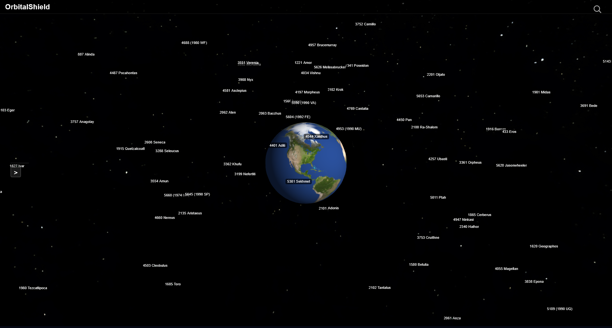
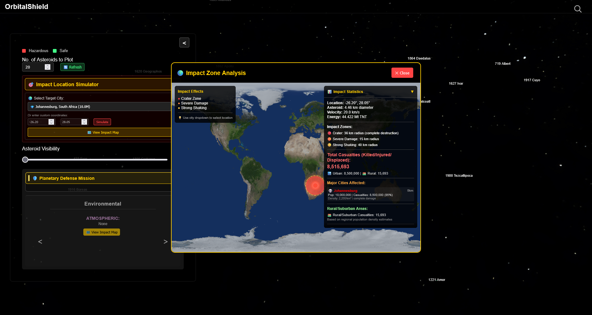
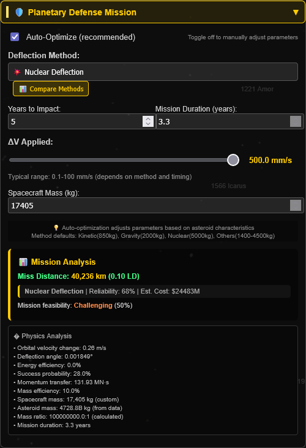

OrbitalShield
Asteroid Impact Simulation & Planetary Defense
Protecting Earth from Asteroid Threats
- Real NASA & USGS data integration
- Scientific impact modeling
- 3D visualization & interactive scenario builder
- Accessible and educational
Why OrbitalShield?
- Asteroid impacts: Real, rare, catastrophic events
- Public awareness & science education are critical
- OrbitalShield bridges data, science, and engagement:
- Empowers users to simulate, strategize, and analyze Earth defense scenarios
- Makes planetary defense interactive and understandable
Interactive 3D Visualization
- Three.js-powered globe with live asteroid orbits
- Rich visuals: neon trails, dramatic color schemes, sound effects

Impact Simulation & Risk Assessment
Advanced physics-based impact modeling system that calculates comprehensive damage scenarios and environmental effects for asteroid collision events.
- Crater Physics: Accurate crater diameter and depth calculations based on kinetic energy transfer
- Seismic Analysis: Earthquake magnitude estimation with damage radius and population impact zones
- Environmental Effects: Atmospheric disruption, tsunami risk, and global climate impact modeling
- Population Risk: Real-time assessment of affected populations and infrastructure damage estimates
- Interactive Targeting: Click-and-simulate functionality with customizable impact coordinates

Defense Strategies & Mitigation Systems
OrbitalShield features an advanced planetary defense analysis engine that evaluates multiple deflection strategies and automatically selects the optimal approach based on asteroid characteristics, warning time, and mission constraints.
- Intelligent Method Selection: automatically selects best deflection method based on asteroid properties
- Mission Optimization: Real-time parameter adjustment with cost-benefit analysis and success probability calculations
- Scenario Comparison: Interactive testing of different approaches with comprehensive impact modeling
- Educational Interface: Visual mission planning tools with step-by-step deflection strategy explanations

User Experience & Education
- Scenario builder: real, historical, and fictional asteroid threats
- Dynamic controls: adjust asteroid, impact, and mitigation parameters
- Educational overlays, infographics, and pop-up facts
Data Integration & Scientific Modeling
- Data Sources:
- NASA NeoWS (Near Earth Object Web Service)
- USGS Earthquake & Elevation APIs
- Physics Engine:
- Real orbital mechanics & Keplerian calculations
- Impact energy, crater size, seismic & tsunami modeling
- Population risk estimation
Accessibility & Scientific Rigor
- Responsive design, clutter free, bright distinguishable colors
- Physically accurate calculations, peer-reviewed formulas
- Transparent codebase and open-source collaboration
Accessible
Open Source
STEM EdTech
The Future of OrbitalShield
- Planned: AI/ML risk prediction, AR visualization, internationalization
- Open for contributions & feedback
- Let’s make planetary defense a global, interactive mission!
🚀 Try it on Vercel!